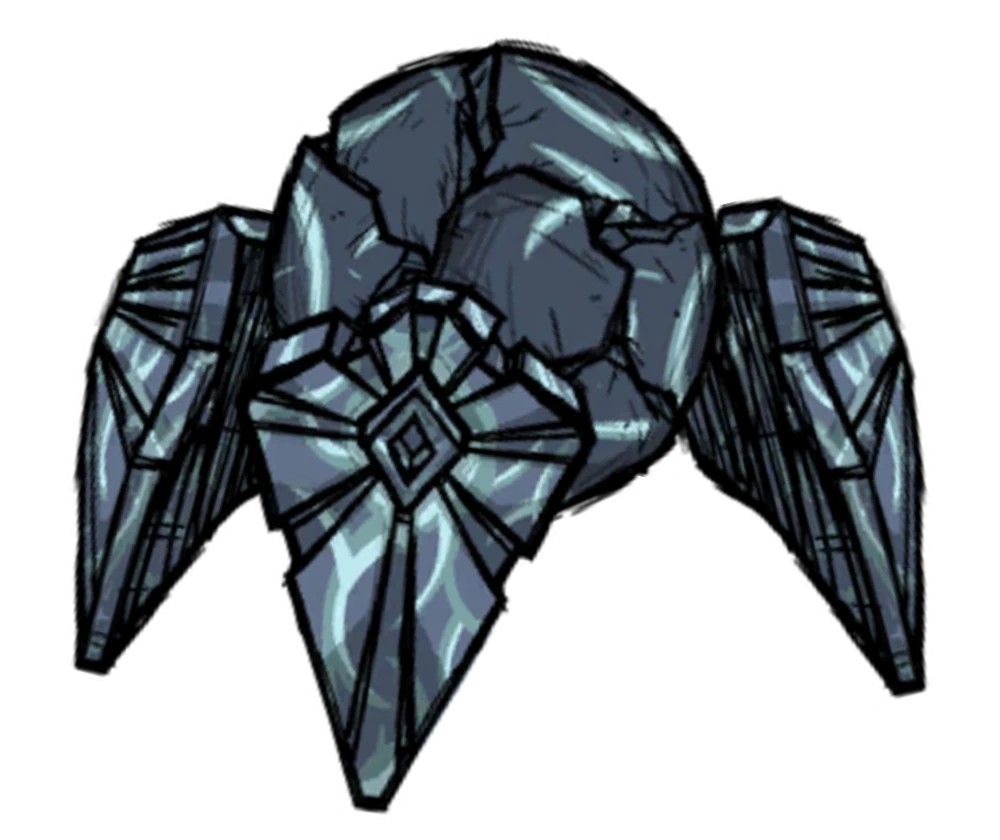

| Nr | Nazwa | Zdjęcie | Pokonany | Nr | Nazwa | Zdjęcie | Pokonany | Nr | Nazwa | Zdjęcie | Pokonany | ||
|---|---|---|---|---|---|---|---|---|---|---|---|---|---|
| 1 | Antyczny strażnik | 10 | Malbatros | 20 | Crab King | ||||||||
| 2 | Deerclops | 11 | Crystal Deerclops | 21 | Great Depths Worm | ||||||||
| 3 | Bearger | 12 | Armored Bearger | 22 | Shadow Pieces | ||||||||
| 4 | Dragonfly | 13 | Eye of Terror | 23 | Antlion | ||||||||
| 5 | Treeguard | 14 | Retinazor | 24 | Spider Queen | ||||||||
| 6 | Bee Queen | 15 | Spazmatism | 25 | Toadstool | ||||||||
| 7 | Fuelweaver | 16 | Frostjaw | 26 | Celestial Champion |  | |||||||
| 8 | Klaus | 17 | Lord of the Fruit Flies | 27 | Scrappy Werepig | ||||||||
| 9 | Moose/Goose | 18 | Possessed Varg | 28 | Nightmare Werepig | ||||||||